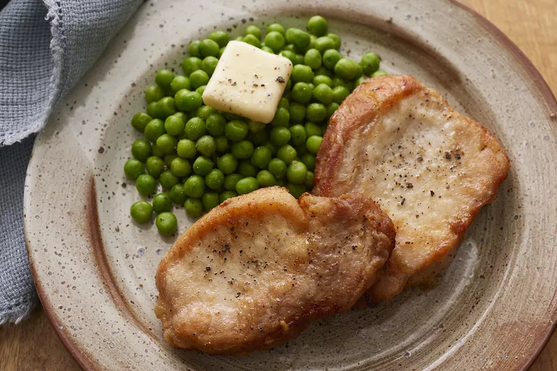

Receta de Lazagna

Descripción
Esta receta nos dara el proceso para preparar una deliciosa chuleta de cerdo con lentejas
Ingredientes
- Chuleta de Cerdo
- Miel
- Ajo
- Lentejas Verdes
- Trozo Cuadrado de Queso
Pasos
- Lavar y cocinar la Chuleta de Cerdo.
- Pelar los ajos y cocinarlos junto con la Chuleta
- Opcional: Hechar Miel a la Chuleta de Cerdo